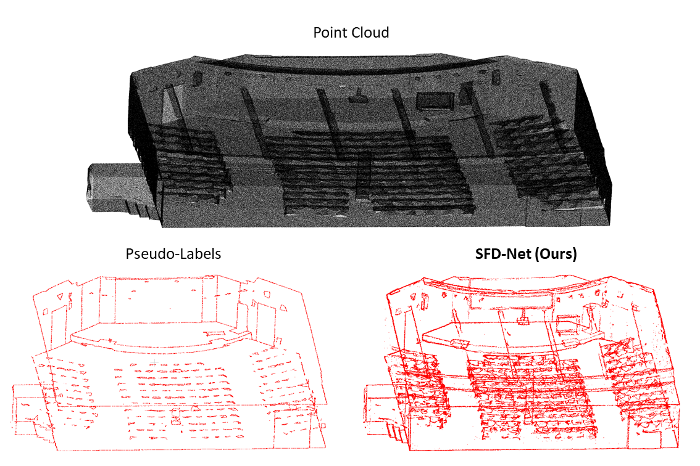
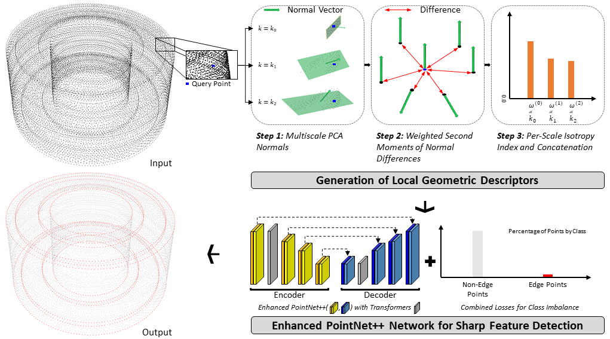
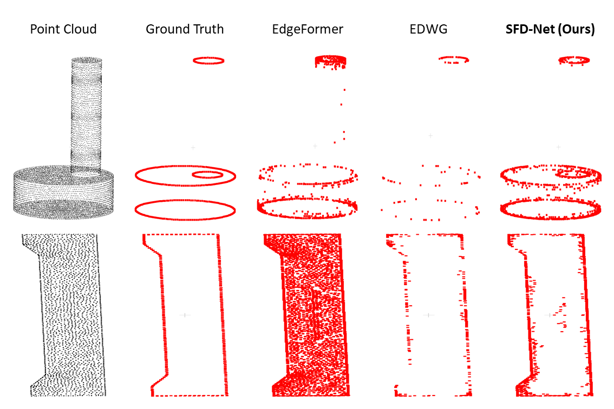
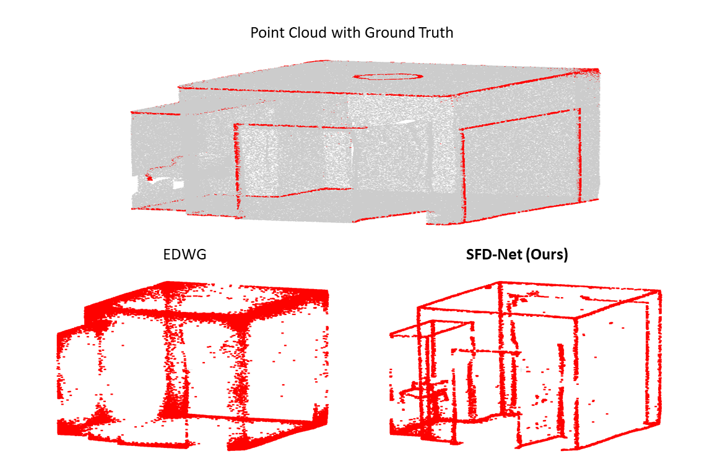

Detection fails where a representation gets the geometry wrong. Find that relation, then supply the explicit cue that fixes it.
Here the relation is the discontinuity of the surface-normal field, and the cue is a small multi-scale descriptor. The descriptor, not any backbone-specific tuning, is what drives the gains, which is why it carries across architectures and from synthetic CAD to real scans.
Sharp features are the loci where a surface's normal field is discontinuous: the creases and corners that define an object's structure. They are also where detection breaks down, because joint density variation and noise destabilize the local statistics detection relies on, and because sharp points are a small minority class. SFD-Net addresses this with the Local Geometric Descriptor (LGD): per-point normals estimated at three nested neighborhood scales, aggregated as second-moment statistics of normal differences into a compact, scale-aware isotropy cue. Because it operates on normal differences, LGD is invariant to rigid motion, global scale, and normal sign flips, with no explicit alignment. It prepends to any point-cloud backbone without modification: on the ABC benchmark it reaches state-of-the-art F1 across four density-and-noise conditions, improves three independent backbones in a plug-and-play setting, and transfers zero-shot from synthetic CAD to real scans up to three orders of magnitude larger.
LGD prepends to PointNet++, RepSurf, and EDWG unmodified, adding +4.05 to +7.00 F1 while cutting FPR by 2.62–9.08. The descriptor drives the gains.
Best F1 in every one of the four density-and-noise settings (61.33 → 57.05), including the largest-noise setting.
Operating on normal differences makes LGD invariant to rigid motion, global scale, and normal sign flips, with no orientation propagation.
Trained only on 10K-point CAD, applied directly to real S3DIS scans up to 7.1M points (~710×) with no retraining or subsampling.
LGD turns each point into a three-value cue, then hands it to a learned backbone. The geometry is made explicit before learning, rather than left for the network to infer from raw coordinates.

Estimate a unit normal at three nested neighborhoods (k = 20, 40, 80). Only directions are kept, giving sign-flip invariance.
Accumulate weighted outer products of normal differences per scale. Using Δn Δn⊤ yields rigid-motion and global-scale invariance with no alignment.
Collapse each scale to one isotropy value, low on planar patches and high near creases and corners, and concatenate the three into a compact cue.
Four conditions: density variation only (none), then increasing Gaussian noise. SFD-Net leads F1 in every condition while keeping FPR among the lowest.
| Method | none F1 | FPR | 0.12% F1 | FPR | 0.6% F1 | FPR | 1.2% F1 | FPR |
|---|---|---|---|---|---|---|---|---|
| PointNet++ | 50.89 | 48.57 | 55.02 | 45.88 | 49.03 | 49.35 | 50.21 | 49.01 |
| DGCNN | 49.89 | 48.90 | 50.65 | 48.51 | 48.44 | 49.58 | 47.53 | 49.99 |
| RepSurf | 55.23 | 45.96 | 57.16 | 43.06 | 54.21 | 46.55 | 48.17 | 49.73 |
| PointMLP | 54.59 | 46.30 | 47.53 | 50.00 | 47.52 | 50.01 | 47.65 | 49.94 |
| PIE-Net | 52.55 | 38.50 | 52.44 | 37.35 | 47.61 | 40.54 | 49.56 | 39.33 |
| BoundED | 48.12 | 49.88 | 47.98 | 49.94 | 47.97 | 49.90 | 47.70 | 49.98 |
| SFC-Net | 47.92 | 49.84 | 48.64 | 49.53 | 48.27 | 49.69 | 48.03 | 49.80 |
| MSL-Net | 59.41 | – | 59.11 | – | 56.11 | – | 52.74 | – |
| EdgeFormer | 52.04 | 31.24 | 48.66 | 33.95 | 34.99 | 45.16 | 28.13 | 48.55 |
| EDWG | 54.95 | 46.06 | 54.93 | 46.07 | 48.20 | 49.81 | 47.76 | 49.90 |
| SFD-Net (ours) | 61.33 | 36.93 | 60.42 | 39.76 | 58.62 | 40.88 | 57.05 | 41.94 |

Prepending LGD, with no architectural change, improves all three backbones. LGD + EDWG (60.80 F1) nearly matches full SFD-Net (61.33), confirming the descriptor is the primary driver.
| Backbone | F1 ↑ | FPR ↓ | ΔF1 | ΔFPR |
|---|---|---|---|---|
| PointNet++ | 50.89 | 48.57 | — | — |
| + LGD | 57.89 | 43.70 | +7.00 | −4.87 |
| RepSurf | 55.23 | 45.96 | — | — |
| + LGD | 59.28 | 43.34 | +4.05 | −2.62 |
| EDWG | 54.95 | 46.06 | — | — |
| + LGD | 60.80 | 36.98 | +5.85 | −9.08 |
Trained only on 10K-point synthetic CAD, SFD-Net is applied directly to real S3DIS scenes (363K to 7.1M points) with no retraining, fine-tuning, or subsampling.

Placeholder — to be replaced with the official ECCV 2026 entry once released.
@inproceedings{oh2026sfdnet,
title = {SFD-Net: Sharp Feature Detection Network Based on Local Geometric Features},
author = {Oh, Inyoung and Ko, Kwang Hee},
booktitle = {Proceedings of the European Conference on Computer Vision (ECCV)},
year = {2026}
}